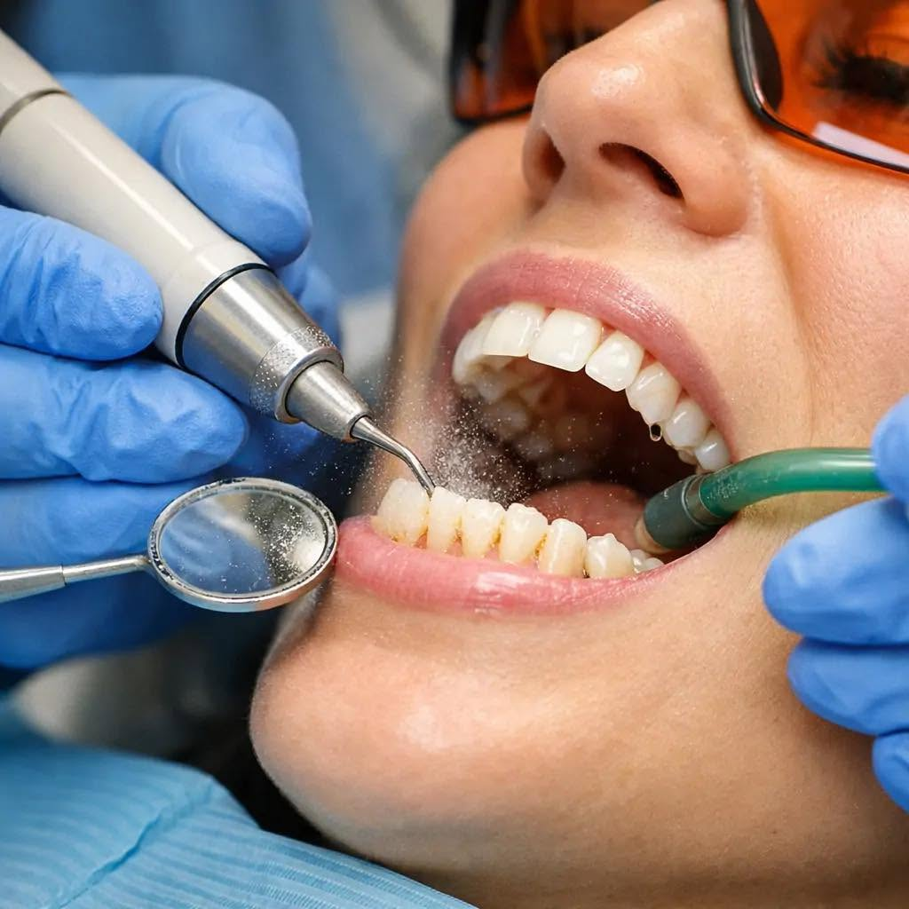
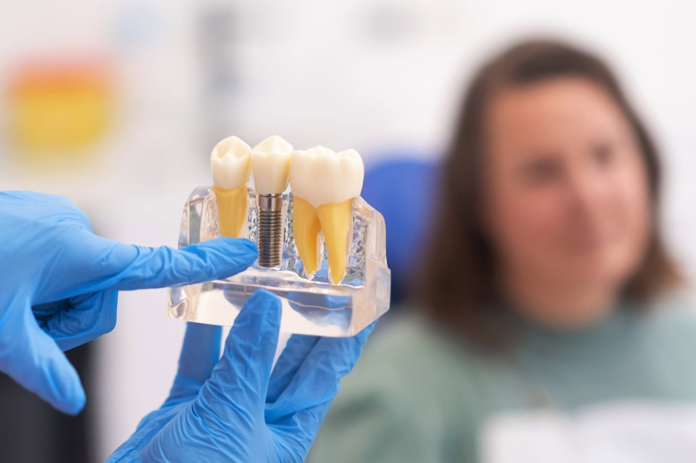

Detartraj și igienizare
Cel mai cerut tratament de aici, după recenzii. O jumătate de oră la fiecare șase luni, și majoritatea problemelor scumpe nu mai apar.

Str. Constantin Titel Petrescu 6 · sector 6, București
Un cabinet mic, în care ești tratat de același medic de fiecare dată. Fiecare pas îți este explicat înainte să se întâmple.
Servicii
De la controlul de rutină până la extracția unei măsele de minte. Ce nu se poate rezolva aici primește o recomandare, nu o improvizație.
Cel mai cerut tratament de aici, după recenzii. O jumătate de oră la fiecare șase luni, și majoritatea problemelor scumpe nu mai apar.

Vezi ce ai, în ce ordine se rezolvă și cât durează. Fiecare etapă e explicată înainte, nu după.
În cabinet, cu evaluarea smalțului înainte. Nu se pornește pe un dinte care are altceva de rezolvat mai întâi.
Procedura de care se tem cei mai mulți. Pacienții o descriu în recenzii drept „fără durere” — asta e tot ce contează aici.

Obturații și endodonție sub anestezie. Dintele se păstrează cât se poate păstra — extracția e ultima opțiune, nu prima.
Familii întregi vin aici de ani de zile, cu cei mici cu tot. Prima vizită e de cunoștință: se numără dinții, nu se tratează nimic.
De ce noi
Cele patru lucruri care se repetă în cele 44 de recenzii. Nu sunt promisiuni scrise de noi — sunt observațiile pacienților, rezumate.
Recenzii Google
Toate reale și publice, cu numele și textul neschimbate.
Recomand cu drag și cu mare încredere! Cabinetul este modern și bine dotat, iar doamnele doctor sunt oameni excepționali. Vă mulțumesc!
Am avut o experiență foarte plăcută la acest cabinet stomatologic. Am efectuat un detartraj, iar doamna doctor a fost foarte atentă, profesionistă și răbdătoare pe tot parcursul procedurii.
Sunt pacientă de mulți ani împreună cu restul familiei mele, merg și cu cei mici cu mare încredere, deoarece primesc cea mai bună atenție, profesionalism, răbdare și empatie.
Personalul este profesionist, atent și răbdător, iar comunicarea este excelentă. Medicul explică fiecare procedură clar și inspiră încredere de la început.
Am venit inițial pentru un detartraj și o procedură de albire, iar experiența a fost peste așteptări. A explicat fiecare pas și m-a făcut să mă simt foarte confortabil pe tot parcursul vizitei.
Cea mai bună doctoriță și cel mai plăcut cabinet. Recomand cu toată inima!
Program
Program de după-amiază patru zile pe săptămână — se poate veni și după orele de birou.
Contact